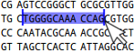
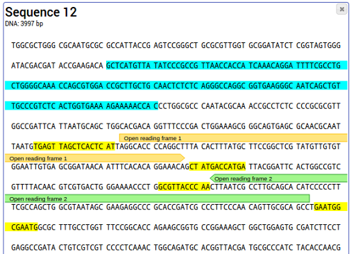

This page is part of the GeneWarrior Documentation. Go to the main site of GeneWarrior
Color or annotate
Select the desired part of the sequence by dragging your mouse.

The selected sequence can now be colored by clicking on the colored boxes.
To annotate the selected sequence, enter the annotation text into the text field and choose the desired arrow
type.
An example of a marked sequence looks as follows:

To remove color and annotation, select the part of the sequence you want to clear and click on "Remove color"
or "Remove annotation".
Extract selected sequence
Click this tool to copy the selected sequence as a new entry.